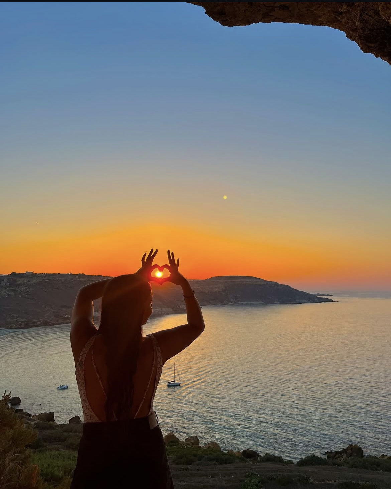

Vivir en Turquía, Malta y Portugal

Vivir en otros países ha sido una de las experiencias más enriquecedoras de mi vida. No se trata solo de visitar lugares, sino de adaptarte, de aprender costumbres y sentirte parte de algo completamente distinto.
En Turquía descubrí una mezcla perfecta entre oriente y occidente. En Malta la tranquilidad del mar. En Portugal, la melancolía de los días soleados y la belleza de lo simple.

“Cuando vives en otro país, dejas una parte de ti allí… y te llevas una parte de él contigo.”